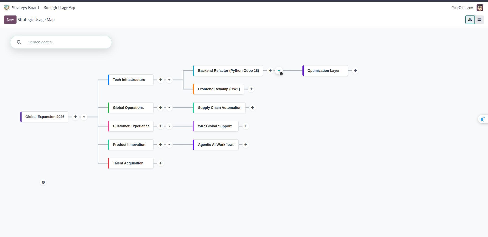
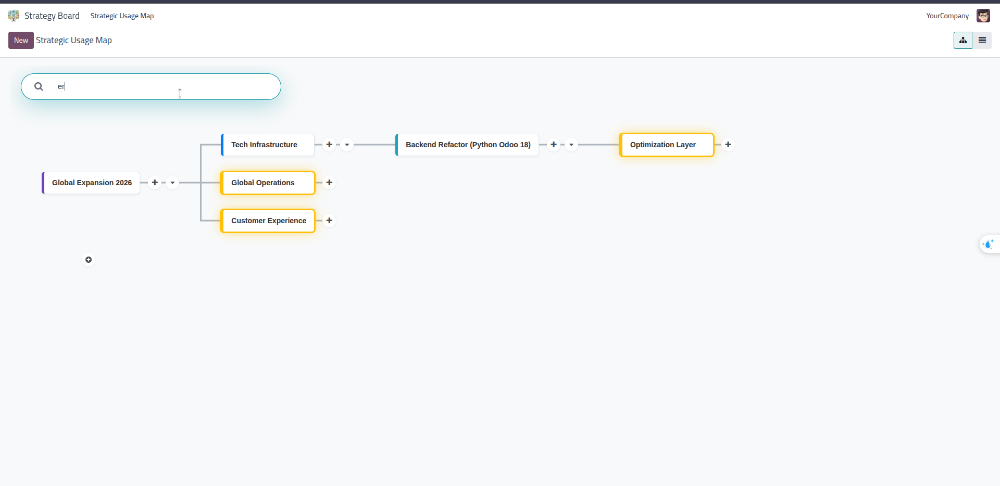
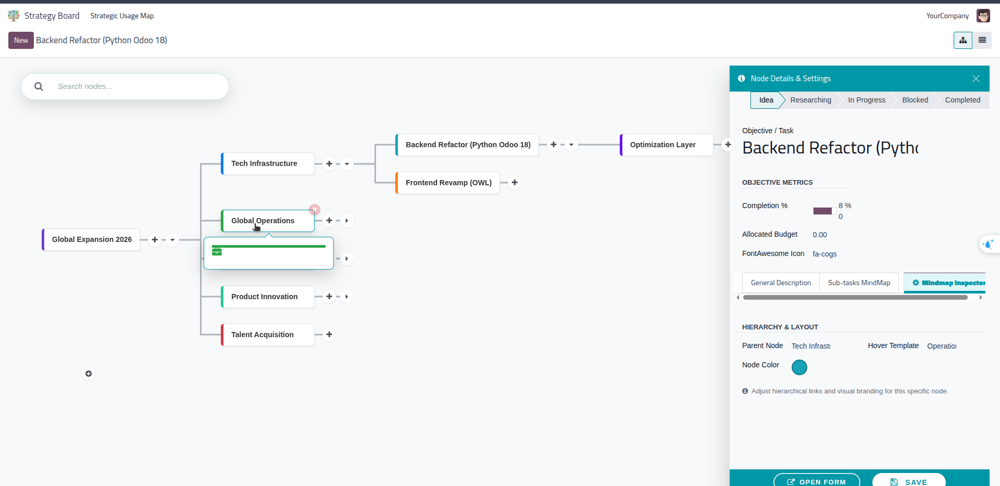
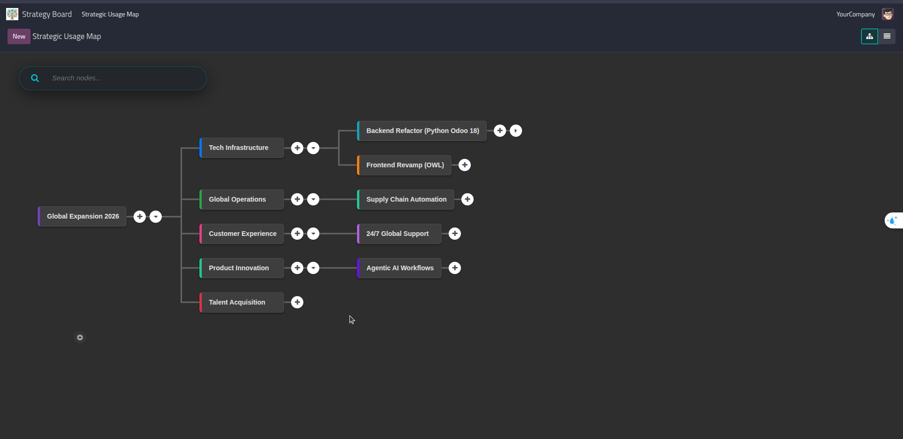
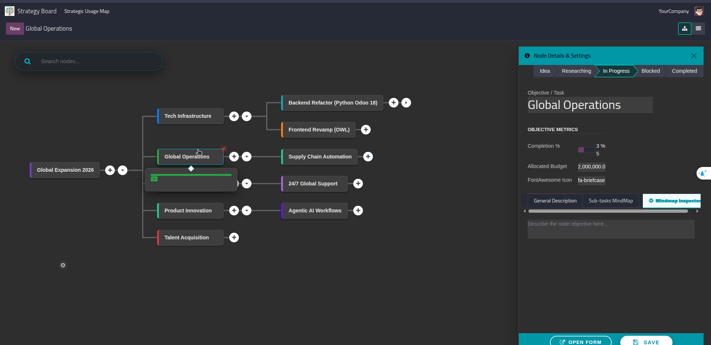
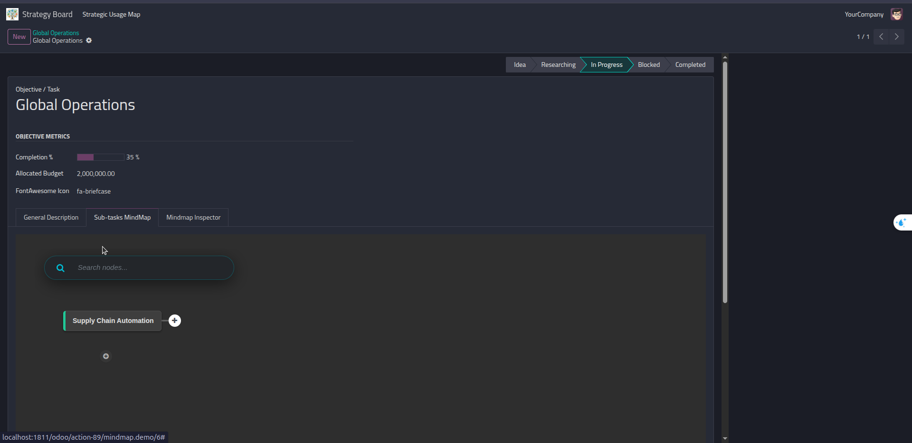

Odoo Mind Map View
Visualize Complex Data Hierarchies with Ease
Transform infinite lists into interactive and beautifully navigable mind maps. Perfect for Projects, HR Charts, Categories, and Strategic Planning.
Download our pre-configured demo data to explore the full potential immediately.
Get Demo Data ModulePan, zoom, and explore an infinite canvas effortlessly. Focus purely on what matters in large structures.
Embed mind maps directly inside Form Views to manage complex sub-items with rich visual cues.
Seamlessly switch between themes for a comfortable, eye-friendly night experience natively supported.
Transform raw data into a structured layout with dynamic root, branches, and leaf nodes. Easily identify organizational depth and visually assess relationships across the whole database.

Modernize your workspace. The canvas adapts perfectly to Odoo's native dark mode environment to deliver a stunning and relaxing visual contrast without compromising readability.

Use the view seamlessly as a widget inside standard form views. Map dependencies across records directly inside an intuitive infinite canvas rather than static tree lists.

Clicking the gear icon opens a sleek, contextual side panel. Instantly modify records without leaving the view. See updates instantly reflected across the canvas.

Rich context options allow users to Create new child nodes directly or Delete linked branches. Additionally, nodes support color coding for quick prioritization and tagging.

Configure the default depth parameter. Easily expand or collapse massive node networks dynamically to maintain focus on the exact hierarchy branch you need.

Add the mindmap view to your Odoo arch with powerful custom attributes. Perfectly designed for developers to implement in minutes.